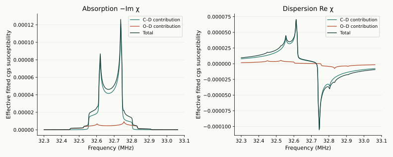
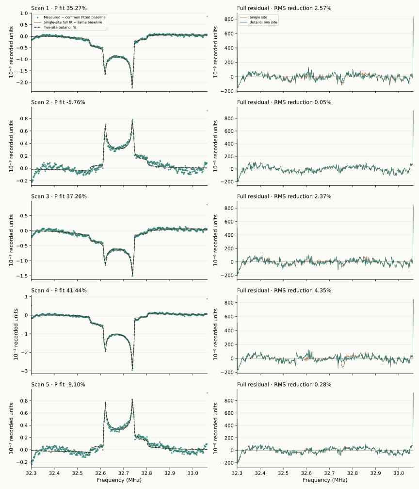

Experimental example 2 of 3
Butanol: fit both deuteron sites
Use the known material to extend the lineshape, then compare both models on exactly the same measured sweeps.
Same data · a material-specific model
Two deuteron environments in butanol.
The owner identified the five sweeps in Sample_RawSignal.csv as butanol. Example 1 keeps the useful single-site starting model. This second example fits the same raw samples with the C–D/O–D mixture in the supplied butanol theory. The scientific context is Dulya et al., A line-shape analysis for spin-1 NMR signals.
g_CD = Γ/Δ_CD, g_OD = Γ/Δ_OD
κ_site = w₊ K₊ + w₋ K₋, w₊ = (P + Q)/2, w₋ = (P − Q)/2
Both sites share vector polarization P, spin-temperature Q(P), and physical Lorentzian HWHM Γ. They have separate splitting scales Δ and EFG asymmetries. The inverse-splitting factors make K an integrated susceptibility weight. A_int has units cgs·MHz; the fitter retains the original amplitude coordinate with A_int = scale_cgs × Δ_CD. K is an effective fitted contribution, not an independently measured chemical abundance.
The supplied theory's weak-quadrupole intensity option is used. Complex absorption and dispersion use the existing orientation integral with 128-point Gauss–Legendre azimuth averaging. The source demonstration's frequency-dependent intensity option, synthetic parameter values, empirical gain tilt, and arbitrary frequency rescaling are not silently treated as measurements.
Both comparisons use all 500 confirmed bins, fⱼ = 32.3 + 0.0015287 j MHz. The cable remains n=1, 3.580 m at 32.7 MHz. The full single-capacitor circuit, finite-source loading, passive cable and fitted detector phase are retained. The same electronics and original lineshape bounds are used; three new nonlinear coordinates are the O–D splitting ratio, asymmetry and fraction. There are 15 fitted unknowns versus 12 in the starting model. At K=0 the original single-site model is recovered.

These are intrinsic susceptibility components. The detector response is nonlinear, so separate site detector voltages should not be added as if they were independent measured signals.
Measured comparison
Better agreement, with the remaining mismatch visible.
The selected two-site fits reduce full-sweep RMS by 0.05% to 4.35%. All bins and endpoints remain in the fit and statistics. The left panels use one common fitted baseline for the data and both curves; the right panels show each model's recorded-minus-fitted residual.
| Scan | Single-site P fit | Butanol P fit | Single-site RMS | Butanol RMS | RMS reduction | O–D weight K |
|---|---|---|---|---|---|---|
| 1 | 35.078% | 35.274% | 60.13 | 58.58 | 2.57% | 0.1663 |
| 2 | -5.738% | -5.763% | 66.43 | 66.39 | 0.05% | 0.0423 |
| 3 | 36.846% | 37.264% | 61.36 | 59.91 | 2.37% | 0.2649 |
| 4 | 41.070% | 41.442% | 62.35 | 59.64 | 4.35% | 0.0767 |
| 5 | -7.965% | -8.098% | 65.38 | 65.20 | 0.28% | 0.0795 |

All selected fits converged. No selected fit lies within the declared near-bound threshold. 1 starting solutions did not converge within their evaluation limit; every candidate remains in the full fit and numerical-validation record. Extra parameters can reduce fit residuals, and structured endpoint deviations remain. This comparison does not establish polarization accuracy or a calibrated uncertainty.
Reproduce the comparison.
Run from the standalone repository with the declared requirements installed. Use fresh output directories. Limiting BLAS threads avoids overhead in these small repeated matrix operations.
OPENBLAS_NUM_THREADS=1 OMP_NUM_THREADS=1 python tools/match_butanol.py \
--output-dir local-results/butanol-matching --starts 6
python tools/export_material_examples.py \
--butanol-fit-dir local-results/butanol-matchingThe fitting contract is butanol-matching.json. Shared parameters retain the original matching bounds; O–D ratio is 1.05–2.5, η_OD is 0–0.5, and K is 0–0.4. These are numerical search choices. The source record identifies the supplied theory files and the adopted conventions.
What this example teaches.
Material identity changes the appropriate lineshape model. Here it is known from the owner, and the added site improves the recorded fit. Common site polarization, common linewidth, fixed nominal circuit components, and the intensity approximation remain hypotheses to test. Near-best starting solutions and quadrature convergence are numerical diagnostics, not statistical confidence intervals.
The original 500-bin single-site generator remains a separate teaching scenario. This material comparison does not update its data or claim a newly trained network. Read the complete material-model record, then compare a different acquisition in Example 3: UVA-ND3 data.